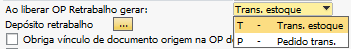
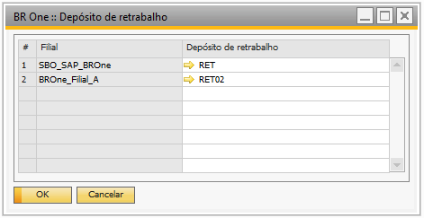
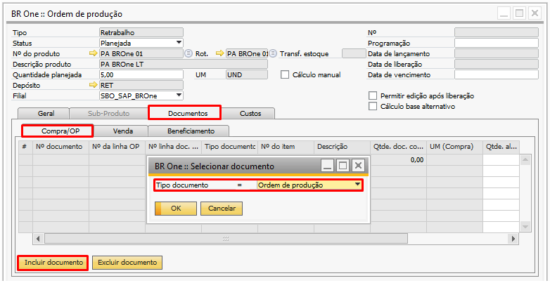
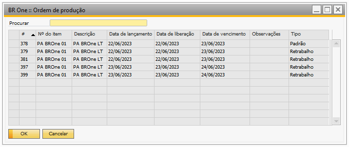
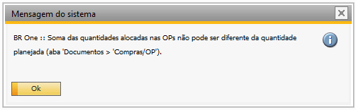
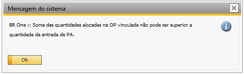
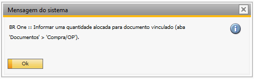
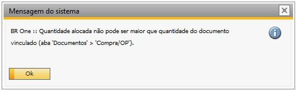

Configurações de produção
Na tela de Configurações de Produção, na aba OP, você encontrará algumas opções importantes para o processo de retrabalho, como:
Ao liberar OP retrabalho gerar;
Depósito retrabalho;
Obriga vínculo de documento origem na OP de retrabalho;
Obriga trocar os lotes do produto.
{kind=link}
Ao liberar OP retrabalho gerar
Nesse campo, temos duas opções disponíveis que, ao liberar uma Ordem de Produção (OP), gerarão um pedido de transferência de estoque ou a transferência direta do estoque. A transferência será realizada DO depósito padrão do item ou DO depósito escolhido pelo usuário, desde que esse depósito tenha a quantidade necessária para o retrabalho, PARA o depósito de retrabalho configurado no campo Depósito de Retrabalho […].
{kind=link}
Depósito retrabalho
Ao clicar […] uma tela será aberta, permitindo que você especifique o depósito no qual os itens a serem retrabalhados serão armazenados.
{kind=link}
Não será possível utilizar esse depósito em uma OP padrão, entrada e/ou saída de mercadoria manualmente e transferência de estoque. Caso tente realizar alguma movimentação, a seguinte mensagem pode ser exibida:
{kind=link}
(-1) BR One :: Não é possível realizar movimentações que envolvam o depósito definido para OP de retrabalho (Do depósito ‘RET’). - 3.0.7
Obriga vínculo de documento origem na OP. retrabalho
Com esse parâmetro marcado, garante que haja um vínculo entre a ordem de produção de retrabalho e o documento de origem correspondente.
Caso tente alterar o status da Ordem de produção (OP) de Planejada para Liberada, o seguinte erro é exibido:
{kind=link}
BR One :: Selecione uma OP na aba “Documentos.
Adicionar um documento vinculado a OP.
Aba Documentos > Compra/OP > Incluir documentos > Selecionar documento > Ordem de produção
 {kind=link}
{kind=link}
Poderá selecionar Ordens de produção do tipo Padrão e Retrabalho
Ao selecionar o documento, será realizado algumas validações para que o processo funcione corretamente, são elas:
Caso a OP vinculada não possuir entrada de PA, ao seleciona-la, a seguinte mensagem será exibida:
{kind=link}
BR One :: Não foi feita a entrada de mercadoria para a OP vinculada.
Caso tente vincular a mesma OP mais de uma vez, a seguinte mensagem será exibida:
{kind=link}
BR One :: Linha 1 já foi adicionada e não pode ser duplicada.
A quantidade alocada da OP. vinculada deve ser igual a quantidade planejada da OP. caso não seja, a seguinte mensagem será exibida:
{kind=link}
Se a quantidade informada na linha da OP. vinculada for maior que a quantidade de entrada de PA da mesma, exibirá a seguinte mensagem:
{kind=link}
Caso tente vincular uma OP. padrão, mas não informe nenhuma quantidade ou informe quantidade 0 no campo Qtde. alocada, a seguinte mensagem será exibida:
{kind=link}
Se a quantidade da coluna Qtde. alocada for maior que a quantidade planejada da OP. padrão, a seguinte mensagem será exibida;
{kind=link}
Caso seja vinculado uma OP. padrão que possua quantidade de PA menor que a quantidade alocada na OP. de retrabalho, a seguinte mensagem será exibida:
{kind=link}
Obriga trocar os lotes/séries do produto retrabalhado
Quando essa flag estiver marcada, obrigatoriamente a flag Obriga vínculo de documento origem de retrabalho, também deve estar marcada. Caso o usuário marque a flag Obriga trocar os lotes/séries do produto retrabalhado, mas não marque o parâmetro Obriga vínculo de documento origem de retrabalho, a seguinte mensagem será exibida:
{kind=link}
BR One :: Habilite o campo de vínculo da OP de retrabalho.